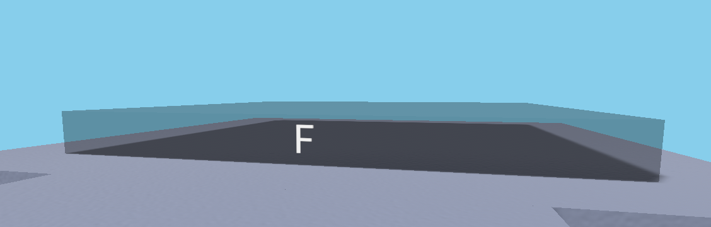
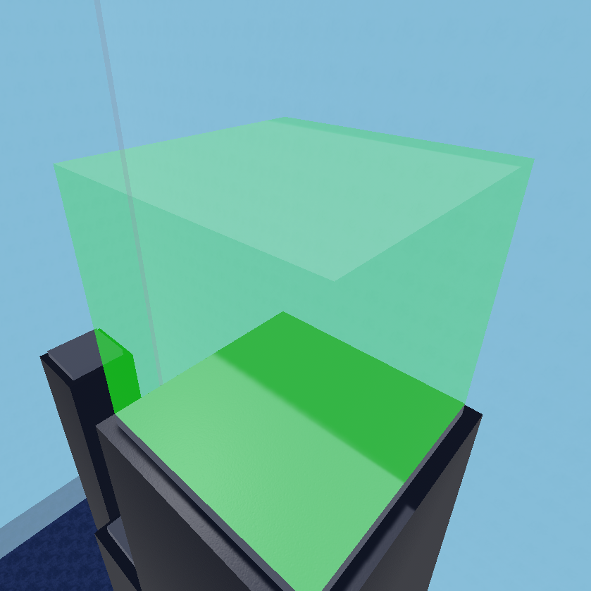
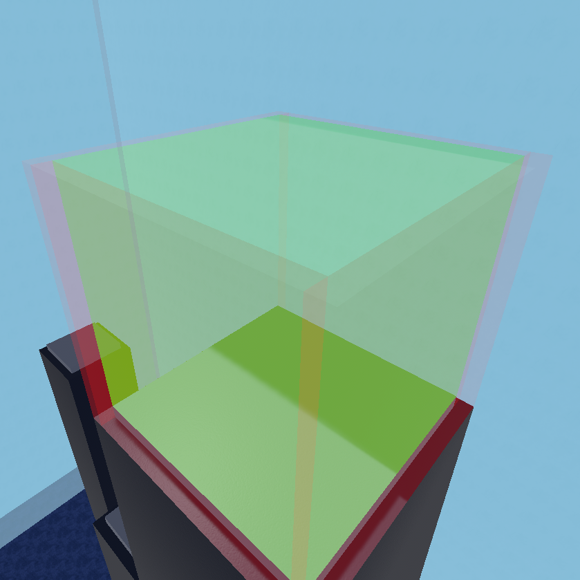
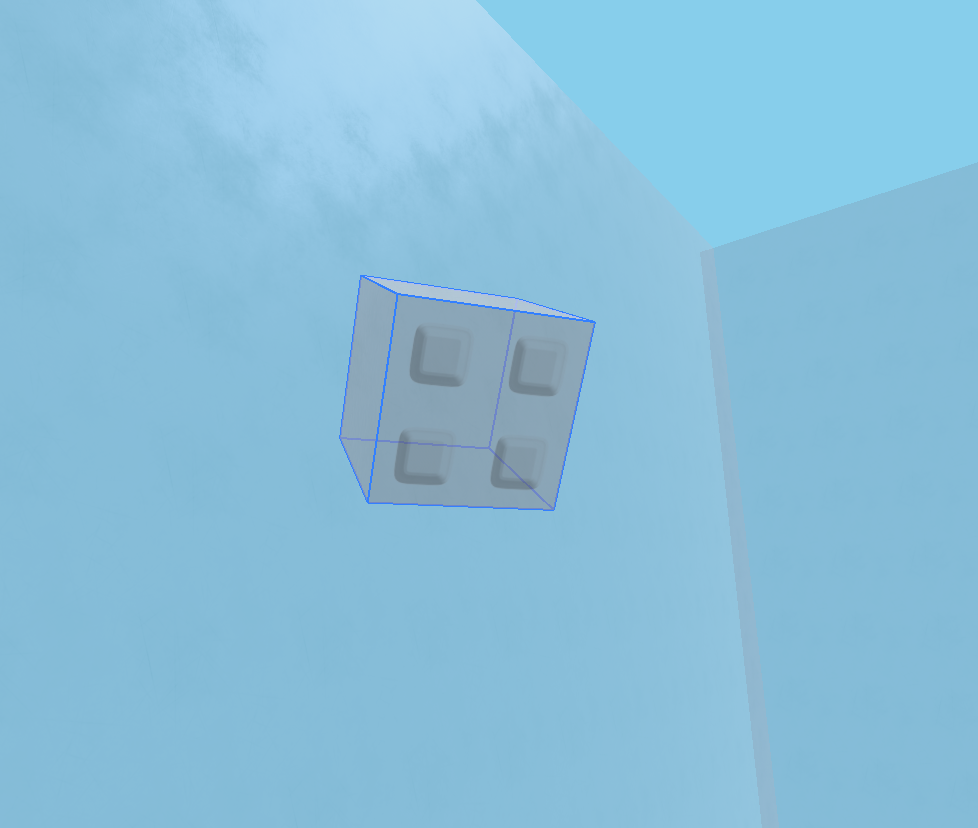

Miscellaneous Features
These features are also included in the map kit, but do not have their own pages.
_Spawn Required
_Spawn is where the players first load into the map. The _Spawn part is usually 12x1x12 studs large, however it can be any size. Their character and their camera both face the FRONT surface of the part, so making the faces different from each other can be a good idea. This is already done through the Map Kit, as the front side is marked with an "F".

_Exit Required
_Exit is where the part region where the players must reach to survive the map, and is only enabled when all the Buttons in the map have been pressed. _Exit can be resized to be any region where the players' goal is, but it must be CanCollide false. There can be more than 1 Exit region inside the map, allowing for alternate routes or endings.

_ExitBlock
_ExitBlock(s) are parts that block off the Exit. These should also be CanCollide false, since they only become solid when a player survives. Having these where the Exit can be exposed to out-of-bounds areas can be important to hide things from the player.
These part(s) are optional, and are not required for the map to function.

ThumbnailCamera
ThumbnailCamera is a part that the player's camera locks onto during the loading screen, having a small swaying animation. This part can be anywhere with any size, but the camera is pointed from the center of the part, facing forward towards the front surface. It's advised to set this part to be transparent and CanCollide false, so that players don't notice it during gameplay.
This part is also optional, and is not required for the map to function.
